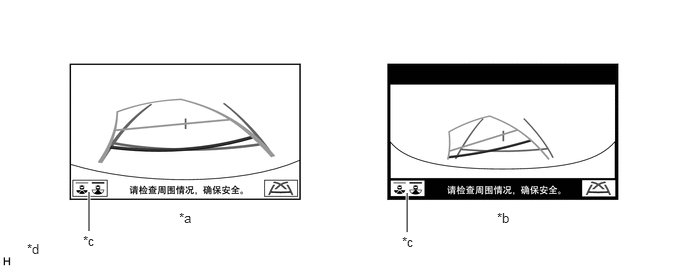
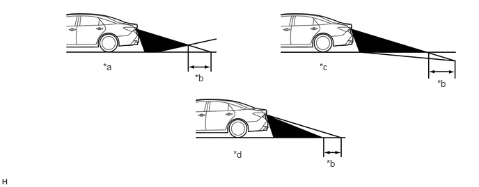
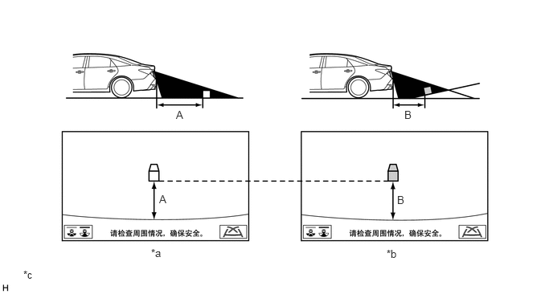
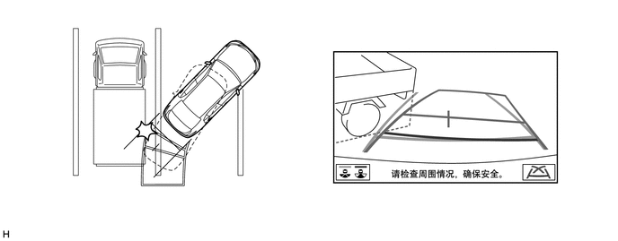
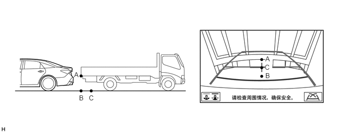

概要
驻车辅助监视系统由后监视器和驻车引导线组成，以辅助驾驶员驻车。
驻车辅助监视系统配有安装在行李箱门上的后电视摄像机总成，可在多功能显示屏上显示车辆后方区域的图像。
此系统包括后电视摄像机总成和收音机和显示屏接收器总成。
后电视摄像机总成控制驻车辅助监视系统。
主要特征
后宽视野
驻车辅助监视系统显示常规后视野和后宽视野。
按下摄像机角度模式切换画面按钮将在后视野和后宽视野之间切换。

| *a | 后视图 | *b | 后宽视野 |
| *c | 摄像机角度模式切换画面按钮 | *d | 所示插图仅为示例。插图可能与车辆屏幕实际显示的内容有所差别。 |
注意事项
一般注意事项
不要完全依赖驻车辅助监视系统。倒车时，如驾驶未配备驻车辅助监视系统的车辆一样小心驾驶。
通过踩下制动踏板调节速度来缓慢倒车。
切勿试图仅通过查看屏幕而倒车。否则，车辆可能因屏幕上的图像与实际情况不同而发生意外碰撞或导致事故。倒车时，要确保使用车内和车外后视镜以直接确认后方及周围区域的安全。
行李箱门打开时，屏幕上仅显示后电视摄像机总成的图像。仅在行李箱门完全关闭的情况下操作系统。
电视摄像机注意事项
不要使电视摄像机总成受到强烈冲击或外力影响，因为这会改变摄像机的方向并导致错误操作。
后电视摄像机总成覆盖的区域有限。后电视摄像机总成不能显示贴近保险杠角的物体或保险杠下方的物体。屏幕上显示的间隙距离与实际距离不同，因为后电视摄像机总成使用广角镜头。
如果有积尘或异物（例如水滴、雪或泥等）粘附到摄像机上，可能无法传输清晰图像。在这种情况下，用大量水冲洗并用柔软的湿布擦净摄像机镜头。不要擦洗摄像机镜头，擦洗可能会划伤摄像机镜头，影响图像效果。
下列情况下，可能很难看清屏幕上的图像，但这并非故障。
在黑暗处（如夜晚）。
镜头附近的温度过高或过低时。
水滴附着在摄像机上或湿度过大时（如下雨时）。
摄像机镜头上有划痕或污物时。
摄像机镜头上粘有异物（如泥）时。
日光或前照灯光束直射在摄像机镜头上时。
在荧光灯、钠光灯和水银灯等下使用摄像机时，灯和照亮区域可能出现闪烁。
用高压清洗器清洗车辆时，不要将水喷射到后电视摄像机总成或其周围区域。高压水可损坏摄像机。
路况注意事项
根据乘员人数、负载情况、道路坡度和道路颠簸程度，显示屏指示和距路面的实际距离之间可能会出现偏差。小心操作车辆。

| *a | 车辆后方陡峭的上坡路 | *b | 偏差 |
| *c | 车辆后方陡峭的下坡路 | *d | 因乘客和负载而发生变化的车姿 |
如果车辆后方有陡峭的上坡路，则障碍物的位置比实际位置看起来要远，如下图所示：

| *a | 情况 A 中的屏幕图像 | *b | 情况 B 中的屏幕图像 |
| *c | 所示插图仅为示例。插图可能与车辆屏幕实际显示的内容有所差别。 | - | - |
在打滑路面（如积雪道路）上，估算的车辆路径可能与实际车辆路径不同。
仅提供一条驻车线时，即使车辆实际上与屏幕上的线不平行，但是看起来仍是平行的。
三维障碍物注意事项
三维物体（如墙或车辆）位于车辆后方时请小心驾驶，因为距离和估算行驶路径都是根据路面提供的。
接近三维物体时，虽然从屏幕上看估算车辆路径上的车辆和物体看起来未接触，但实际上车辆可能与物体接触。

所示插图仅为示例。插图可能与实际车辆画面有所不同。
三维物体（如车辆）和平面物体（如路面）在屏幕上的距离指示不同。如下图所示，点 A 和点 B 在垂直方向实际为垂直排列，点 C 稍远，然而，这些点是按照与车辆的距离排列的，即 B、C 和 A。因此，如果倒车至屏幕上的 B 点，则车辆将碰撞到该三维物体。

所示插图仅为示例。插图可能与实际车辆画面有所不同。